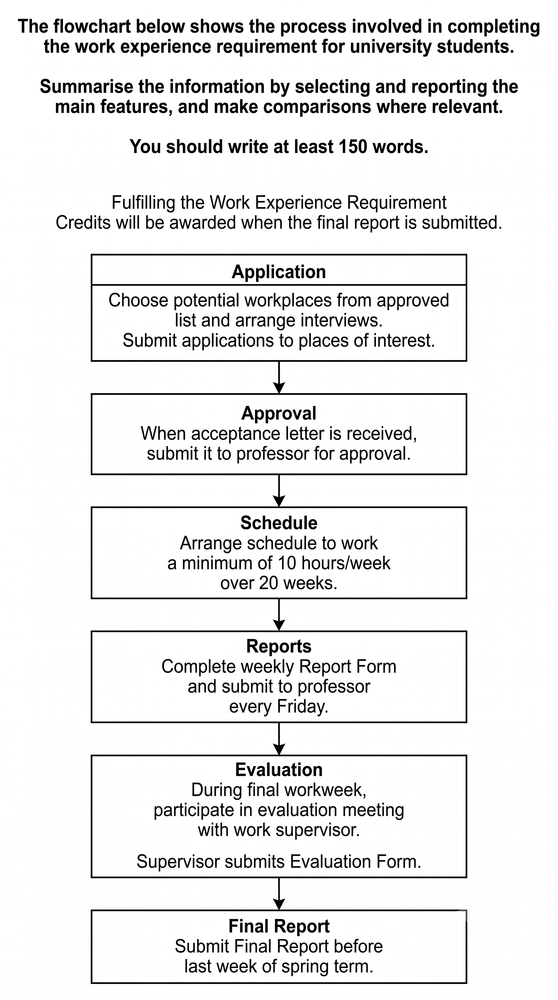

Task Overview
Choose an overview media (audio/video) to get a guided briefing for your Task 1.
A concise audio walkthrough of approach & tips. The step marks complete when the audio ends.
A short video overview (or speaker notes). The step marks complete when the video ends.
Active Listening: Guess the Task
Scan this QR code with your phone to submit your predictions, or click the link to open it:
Task Type
Flow Chart / Process Diagram
Requires describing a linear process step-by-step using appropriate sequence connectors and passive verb forms.
Image Analysis
- • Start Point: Selecting a suitable workplace & arranging an interview.
- • End Point: University credits awarded upon final report submission.
- • Number of Stages: 6 sequential stages.
Brainstorm (3-minute focus)
Read the Task 1 question and study the flowchart. Use the timer to focus on planning.
IELTS Academic Writing Task 1 Question
The flowchart below shows the process involved in completing the work experience requirement for university students.
Summarise the information by selecting and reporting the main features, and make comparisons where relevant.
Write at least 150 words.
Flowchart Sequencing Challenge
Arrange these flowchart stages in the correct chronological order by clicking them:
{kind=link}

Identify the stages! Jot main points: connections, sequence flow, and inputs.
Vocabulary & Process Verbs
High-level verbs and key transition vocabulary. (Click words to hear pronunciation)
High-Level Verbs for Process Charts
| Simple Verb | Band 9 Alternative |
|---|---|
| do | Undertake |
| get | Obtain |
| send | Submit |
| finish | Complete |
| begin | Commence |
| end | Culminate in |
| join | Participate in |
| arrange | Schedule |
Core Transition Vocabulary
| Word | IELTS Example |
|---|---|
| Concurrently | Students submit weekly logs; concurrently, supervisors prepare assessments. |
| Subsequently | Once accepted, the student subsequently seeks formal professor approval. |
| Thereafter | The interview is conducted, and thereafter the schedule is finalized. |
| Culminates | The work placement program eventually culminates in the credits award. |
Ear-Trainer: Vocabulary Hunt
Lexical Hunt: 0/4 FoundListen to the audio overview again and click the vocabulary cards below to mark them as "Heard". Can you find all 4 core transition words used in the lesson?
Plan: Introduction & Overview
High-scoring models to frame your Task 1 report.
"The diagram elucidates the various stages that university students must complete in order to satisfy the work experience requirement."
"Overall, the process consists of six sequential stages, commencing with the application for a suitable workplace and culminating in the submission of the final report. Notably, students must obtain approval, complete weekly reporting requirements, and undergo an evaluation before finishing the programme."
Plan: Body Paragraph Bifurcation
Divide the flowchart stages logically to write two balanced paragraphs.
Body Paragraph 1
Application • Approval • Schedule
- Select a suitable workplace
- Arrange an interview with the employer
- Submit formal application
- Receive official acceptance
- Obtain professor's approval
- Schedule minimum working hours
Body Paragraph 2
Weekly Reports • Evaluation • Final Report
- Weekly report submission
- Undergo final evaluation stage
- Supervisor evaluation form completion
- Final report submission
- University credits awarded
Stage-wise Explanation
A step-by-step breakdown of actions required at each process stage.
Paragraph 1 Flow (Stages 1-3)
- Application: Students first select a potential workplace and arrange an interview before submitting their application.
- Approval: Upon receiving employer acceptance, the student must obtain the professor's signature and approval.
- Scheduling: The student and supervisor schedule and agree on the minimum working hours.
Paragraph 2 Flow (Stages 4-6)
- Weekly Reports: Throughout the placement, student progress reports must be submitted on a weekly basis.
- Evaluation: At the end of the term, a final supervisor evaluation form is filled out.
- Final Report: The process concludes with the final report submission, and academic credits are awarded.
Grammar & Cohesive Devices
Learn essential sequence connectors, passive voice structures, and avoid common errors.
High-Level Passive Voice
Avoid saying "They do..." or "They submit...". Use process passives:
Best Cohesive Devices
- • Start: Initially, At the outset, Commences with...
- • Next: Subsequently, Following this, Thereafter, Afterwards...
- • Sim: Meanwhile, At the same time...
- • End: Eventually, Concludes with, Ultimately, Finally...
- • Connectors: Prior to, Before, After, Once, Subsequently
Common Errors Fixed
- ❌ The students first choose workplace.
✅ Initially, students choose a potential workplace from an approved list. - ❌ Then they submit.
✅ Subsequently, the application is submitted for approval. - ❌ At last they finish.
✅ Ultimately, the process concludes with the submission of the final report.
Final Review & Download
Review your notes and download the tutor report or return home.

Task 2 Overview
Choose an overview media (audio/video) to get a guided briefing for your Task 2 Essay.
A concise audio walkthrough of approach & tips.
A short video overview.
Active Listening: Guess the Task
Scan this QR code with your phone to submit your predictions, or click the link to open it:
Brainstorm (5-minute focus)
Read the Task 2 question carefully. Plan your ideas and examples.
Task 2 Question
More and more people are choosing to eat ready-made meals rather than freshly cooked food.
• Why is this?
• Do the advantages of this trend outweigh the disadvantages?
Time Management
Spend 5 minutes planning. A good plan saves time during writing.
Generate ideas: Reasons, Examples, Consequences.
Vocabulary Table
High-level vocabulary for your essay. (Click word to listen)
| Word | Meaning | Example |
|---|---|---|
| Anathema | Something intensely disliked or avoided. | For many health experts, excessive reliance on processed food is an anathema to healthy living. |
| Ineluctable | Impossible to avoid or escape. | Urbanisation and fast-paced schedules have made the demand for convenience foods almost ineluctable. |
| Redound | To contribute or lead to an outcome (positive or negative). | This shift may redound to the benefit of busy professionals but harm public health in the long term. |
| Salubrious | Health-promoting; healthy or wholesome. | Freshly prepared home meals are generally considered far more salubrious than processed alternatives. |
| Profligacy | Reckless wastefulness or extravagance. | The excessive single-use plastic packaging found in prepared meals reflects environmental profligacy. |
| Sagacious | Wise, showing keen judgment and foresight. | A sagacious government would encourage healthier eating habits by subsidizing raw organic ingredients. |
Ear-Trainer: Vocabulary Hunt
Lexical Hunt: 0/6 FoundListen to the audio overview again and click the vocabulary cards below to mark them as "Heard". Can you find all 6 premium words used in this lesson?
Plan: Introduction
Paraphrase the question, state your position, and outline your main points.
In today's fast-paced society, convenience has become a major factor influencing people's eating habits. As a result, an increasing number of individuals prefer ready-made meals instead of preparing fresh food at home. Although this trend offers considerable convenience and saves valuable time, I believe its disadvantages, particularly the adverse effects on health and traditional lifestyles, outweigh its benefits.
Plan: Conclusion
Summarise your main points and restate your final opinion.
In conclusion, the growing popularity of ready-made meals is mainly driven by busy lifestyles, greater convenience, rising incomes, and improved product quality. While these meals save time and simplify daily life, I believe the negative impacts on health, cooking culture, and the environment make this trend more harmful than beneficial.
Plan: Body Paragraph 1
Focus: Why are people choosing ready-made meals?
1. Busy Lifestyles & Time Constraints
People work longer hours. Cooking requires planning, shopping, and cleaning, which consumes valuable time. Prepared meals provide an instant solution.
2. Greater Convenience & Accessibility
Supermarkets stock thousands of options and food delivery apps deliver prepared meals in minutes, allowing access to diverse cuisines without cooking skills.
3. Rising Incomes & Lifestyle Changes
People are willing to pay extra for convenience. Dual-income households prioritize leisure time over money, making prepared meals a staple of urban lifestyles.
4. Improved Quality & Product Variety
Food manufacturers now offer organic, low-sodium, and premium international cuisines. Better vacuum packaging preserves the taste and nutritive value.
Plan: Body Paragraph 2
Focus: Advantages vs. Disadvantages (Do the benefits outweigh the drawbacks?)
Advantages of this Trend
- 1. Saves Significant Time Less time spent preparing food and cleaning dishes, freeing up hours for rest, family, or studying. Example: A doctor on long shifts rests instead of preparing food.
- 2. Offers Convenience & Flexibility Meals are available instantly anytime, which is beneficial during unexpected schedule shifts or emergencies. Example: Parents coming home late quickly feed their family by heating ready-made options.
- 3. Provides Greater Food Variety Allows easy access to international cuisines without having to master complex culinary skills. Example: Eating Japanese sushi one day and Mexican burritos the next.
- 4. Reduces Domestic Food Waste Pre-packaged meals are pre-portioned, avoiding leftover raw ingredients from spoiling in the fridge. Example: A single individual avoids throwing away unused vegetables and meats.
Disadvantages of this Trend
- 1. Adverse Health Consequences Prepared foods often contain high levels of sodium, sugar, and preservatives, raising risks of lifestyle diseases. Example: Frequent consumption of frozen meals can trigger high blood pressure.
- 2. Higher Long-Term Expenditures Buying individual prepared meals is significantly costlier than preparing ingredients in bulk. Example: Purchasing prepared lunches daily adds hundreds of dollars to monthly expenses.
- 3. Weakens Cooking Culture & Traditions Younger generations miss out on learning basic cooking skills, and family eating becomes less interactive. Example: Traditional family recipes are lost as children grow up on pre-made food.
- 4. Creates Environmental Issues Generates a massive amount of single-use plastic waste and carbon emissions from shipping processed foods. Example: Plastic packaging from heated meals severely adds to landfill dumps.
Final Review & Download
Review your essay plan and download the tutor report.